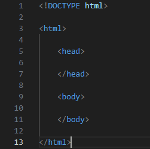

Průvodce html od začátečníka začátečníkovi
Proč to dělám
Možná stejně jako vy, potřebuji vytvořit vlastní stránku, ale nemám s tím žádné zkušenosti. Rozhodl jsem se tedy spojit proces mého seznamování
se s html programováním a výslednou stránku do jednoho projektu. Pokusím se, aby se vzhled stránky postupně měnil spolu s popisem její tvorby.
Co je potřeba
Jako první budeme potřebovat program, ve kterém můžeme programovat. Já momentálně používám
Visual studio code. Například
zde si ale můžete vybrat jakýkoliv program vám bude vyhovovat a použít se dá i běžný poznámkový blok.
Čistý start:
Všechny vlastnosti stránky či pouze její části se definují pomocí takzvaných tagů. Tagy se uzavírají do takovýchto závorek < >.
Tagy mohou být párové nebo nepárové. Párové ovlivňují text, který se nachází mezi první a druhou částí tagu, kdežto nepárové platí obecně.
Na začátku každého kódu se definuje typ dokumentu nepárovým tagem <!DOCTYPE>.V našem případě <DOCTYPE html>. Začátek a konec
dokumentu určuje tag <html>. Dále jsou důležité párové tagy <head> a <body>. To co se nachází mezi první a druhou částí
<head> se objeví v hlavičce stránky zatímco <body> tvoří její hlavní část. Takže základní kostra dokumentu bude vypadat nějak takto:

Obrázek jsem na stránku vložil pomocí tagu <img>. Jako většina tagů, má i tento své atributy,
které se píší přímo do tagu a oddělují se mezerníkem. Pro obrázek je nejdůležitějším atributem "src", tedy zdroj. Zdroj se udává buďto jako
relativní, nebo joko absolutní adresa. Při použití relativní adresi musí být obrázek ve stejném adresáři jako kód stránky a do zdroje se
píše pouze název a typ souboru. V mém případě pak tag vypadá takhle: <img src="htmlkostra.png">. U absolutní adresy se do zdroje udává
URL obrázku. Něco jako <img src="https://www.stranka.cz/images/htmlkostra.png">. Další důležité atributy jsou "alt" (popisek namísto
nenačteného obrázku), "width" (šířka), "height" (výška) a "align" (zarovnání: align="right"/"left"/"top"/"middle"/"bottom").
Můžeme se pustit do úpravy textu. Teď by se mi hodil nadpis.
Úprava textu
Různé úrovně nadpisů se tvoří tagy <h1>, <h2>, <h3>... až <h6>. Nadpisy mají také atribut "align"
(left, right, center, justify = zarovnání do bloku).
Mezi touto a předchozí řádkou jsem použil zalomení. K tomu slouží tag <br>.
Většinou je ovšem výhodnější používat párový tag <p>, tedy odstavec, který má také atribut "align" se stejnými hodnotami jako nadpis.
Podobně funguje i tag <div>, což je oddíl jakéhokoliv textu či objektů.
Pro vzhled písma je důležitý tag <font>, který má atributy "face" (font písma), "size" (velikost odstupňovaná od 1 do 7), a color
(barva). Některé základní barvy lze zapsat jejich anglickým názvem, nebo pro jakoukoliv barvu lze použít procentový, desítkový nebo
šestnáctkový zápis. Výsledný zápis tagu <font> může vypadat nějak takto:
<font face="arial" size="4" color="#0000FF"></font>
Mezi další tagy pro úpravu písma patří <i> (kurzíva), <b> (tučné písmo), <u> (podtržení), <sup>
(horníindex), <sub> (dolníindex).